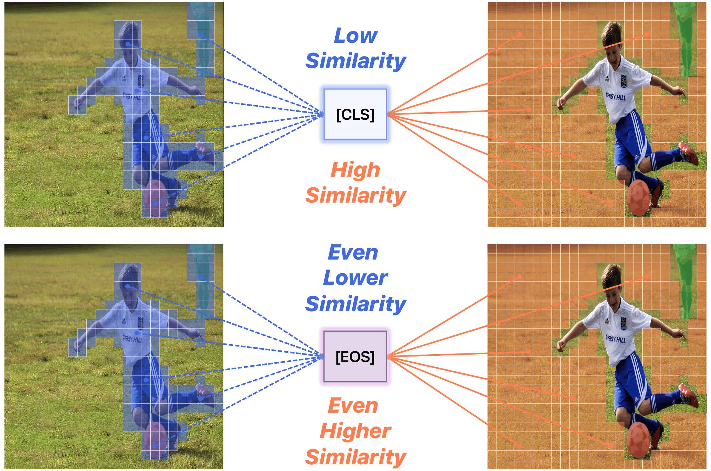
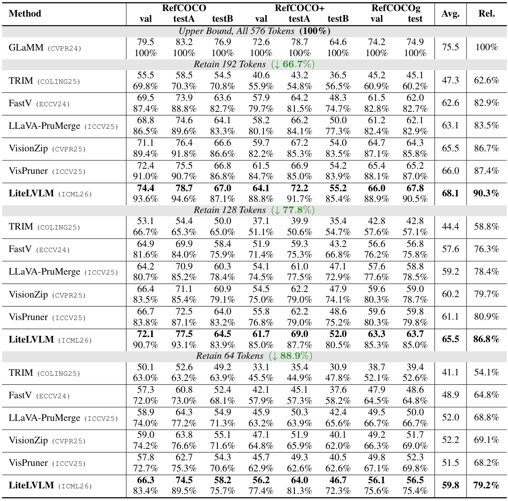

Visual Effects
Using nerfies you can create fun visual effects. This Dolly zoom effect would be impossible without nerfies since it would require going through a wall.
How long did you wait for ChatGPT or Gemini to answer a question about an uploaded image? Or, if you have ever run these models on your laptop, how much memory did they take up? Such large vision-language models (LVLMs) can understand images alongside text, but this becomes slow and computationally expensive since they process hundreds or even thousands of visual tokens.
Our work explores ways to accelerate LVLM inference by removing unnecessary visual tokens while preserving important ones. Our finding is contrary to common intuition. We found that visual tokens belonging to the object are surprisingly less similar to the input text – akin to the image pieces within a black bear being barely related to the text “a black bear.”
Motivated by this insight, we develop an efficient technique called LiteLVLM to segment text-described objects at the pixel level. This brings you faster, lighter, and easier-to-use LVLMs, even if your device is not the latest one.

Using nerfies you can create fun visual effects. This Dolly zoom effect would be impossible without nerfies since it would require going through a wall.
As a byproduct of our method, we can also solve the matting problem by ignoring samples that fall outside of a bounding box during rendering.
We can also animate the scene by interpolating the deformation latent codes of two input frames. Use the slider here to linearly interpolate between the left frame and the right frame.

Start Frame

End Frame
We validate LiteLVLM on various pixel grounding tasks across image and video domains.

If you have any questions, please feel free to contact us:
@article{lee2026clip,
author = {Lee, Sangin and Choi, Yukyung},
title = {CLIP Tricks You: Training-free Token Pruning for Efficient Pixel Grounding in Large VIsion-Language Models},
journal = {arXiv preprint arXiv:2605.13178},
year = {2026},
}